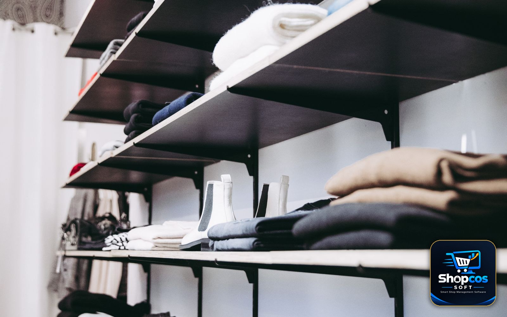
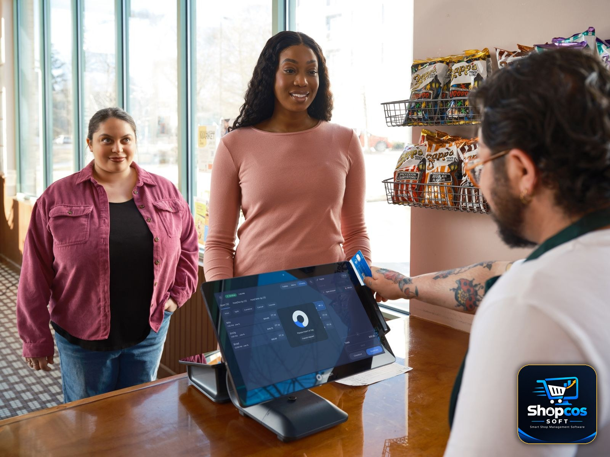

Walk into a busy retail shop at 7 in the evening — a clothing store in Faisalabad, a general store in Lahore, a crockery shop in Karachi — and you will see the same scene at the counter. A queue of customers, a shopkeeper adding figures on a calculator, a customer changing her mind about one item, and the whole addition starting over while the next three people wait. The shop is doing fine. Customers keep coming. But the counter is the bottleneck, and every minute a customer spends waiting is a minute they spend deciding to shop somewhere else next time.
Billing software for retail shops fixes the counter first, and everything else second. It is not a faster calculator and it is not a fancy till. It is the program that runs the sale from first scan to printed bill — and, if it is built properly, the same entry updates the stock on the shelves and the customer's khata at the same moment. This guide explains what retail billing software actually does, the 11 features worth paying for, the 4 types on the market, what it really costs over three years, and how to choose one without getting sold a system built for a supermarket chain.
What Billing Software for Retail Shops Actually Does
Strip away the sales talk and billing software for retail shops does one job: it turns a sale into a record — a bill for the customer, less stock on the shelf, and, if the sale was on credit, an entry in the customer's khata — in a single action at the counter. A good system does that in under a minute for a normal basket, prints a clean receipt, and tells you at closing time exactly what you sold, what you earned, and who still owes you.
That is a bigger job than it sounds, because a retail counter is not a simple place. A kiryana sells loose atta by the kilo. A clothing shop sells one kurta in four sizes and three colours — which is twelve stock items, not one. A mobile shop sells individual handsets, each with its own IMEI. A wholesale counter sells by carton and by piece at different rates. The software has to handle all of that without the cashier fighting it, because the moment the cashier has to think about the software, the queue stops moving.
It is worth being clear about what billing software is not, because three different products get sold under the same name:
- It is not a cash register. A register adds and opens a drawer. It does not know what you sold, what is left on the shelf, or who owes you. If your register is the only record of the day, you have no record at all — our guide to the 7 signs your shop has outgrown its cash register is the honest test.
- It is not accounting software. Accounting programs are built for accountants — ledgers, balance sheets, tax returns. A retail shopkeeper who buys one usually stops using it within a month, because the counter needs speed, not a chart of accounts.
- It is not a phone khata app. Phone apps are fine for a ledger, but a phone screen cannot run a billing counter, and your data sits in someone else's account. Billing software lives on the shop's own computer, at the counter, where the sale happens.
Done right, billing software is the middle layer of the whole shop: the bill at the front, the stock behind it, and the khata underneath it, all fed by the same single entry. Our guide to shop management software in Pakistan explains the full picture — this guide stays on the billing half, and how to judge it.
The 11 Features Worth Paying For
Every vendor's website lists forty features. Most of them are decoration. These eleven are the ones that decide whether you will still be using the software in six months — test them with your real shop data during the free trial, not on a demo video with one fake entry.
1. Barcode-speed billing
The core of the whole thing. A regular customer's basket — ten to fifteen items — should go from first scan to printed bill in under a minute. Scan, tap, print. If the cashier has to tap through three screens per item, or type prices by hand, the software is slower than the calculator it replaced. Ask the vendor to bill a real basket in front of you, with your own items, and time it.
2. Loose items, variants and weighing-scale items
Retail is not all neat packets. Loose sugar by the kilo, fabric by the metre, a kurta in size Medium in blue, a handset with its own IMEI. The system must bill fractions and decimals, track size and colour as separate stock, and talk to a weighing scale if you have one. If it can only sell "one piece at one price," it was built for a different kind of shop.
3. Stock that updates itself — with low-stock and expiry alerts
Every bill should reduce the stock automatically, and the system should warn you before an item finishes — not after a customer asks for it and you have to say "khatam ho gaya." Expiry matters just as much: for kiryana, general stores and especially medical stores, the system should flag items near their expiry date so you can sell them first or return them. Our guide to reducing expired product losses puts a number on this leak, and it is bigger than most shops think.
4. Khata and udhar built in, with credit limits that actually stop the sale
In most Pakistani retail shops, a large share of daily sales goes on udhar, and the total sitting out in the mohalla is often the biggest number in the business. The software must keep a ledger per customer with a running balance — and it must warn the cashier, at the counter, when a customer's balance crosses the limit you set. A limit that only exists as a note you have to remember is not a limit. Our guide on how to manage udhar and khata covers the daily discipline; the software is what makes it possible without an evening of register work.
5. Full offline mode
Your billing counter cannot depend on the internet. Load shedding takes the Wi-Fi with it, mobile data drops in the middle of the bazaar, and the queue does not wait for the connection to come back. The system must run 100 percent on the shop's own computer, with no internet needed at the counter. If a seller tells you "internet to chahiye hoga" for basic billing, walk away. Our comparison of offline vs online billing software explains why this one question eliminates half the systems on the market.
6. A full Urdu interface — not just Urdu labels
The buttons, the bill, the khata statement: all of it in a language your staff actually reads. If the software is English-only, your staff will avoid it, you will be the only person who can use it, and within a month the register book will be back on the counter. Ask to see the Urdu screens before you pay, and ask whether the printed bill and the WhatsApp statement can go out in Urdu too.
7. Thermal printer support and a bill that looks like your shop
Your shop name, your phone number, a thank-you line — printed on a small thermal printer in seconds, not on an A4 sheet from an office printer. Check that the software works with the printer you already own, or the one you plan to buy: 58mm or 80mm, USB or Bluetooth. Our guide to thermal printers for billing covers the width choice and the settings that make every bill print cleanly.
8. Day closing and daily profit in one screen
At closing time you should see, without a calculator and without exporting a spreadsheet: today's total sale, today's profit, today's udhar, and the cash that should be in the drawer. If the system cannot tell you today's profit in one screen, it is a billing machine, not billing software. This one screen is also the test that catches staff mistakes the same day they happen, instead of at month end.
9. WhatsApp bills and statements in one tap
The bill goes to the customer's phone the moment the sale is done, and the monthly udhar statement goes with your shop name on it — every purchase, every payment, the balance, the dates. A customer who can see his own full statement argues far less about it, and pays faster. Our guide on how to send a bill on WhatsApp shows the exact wording that works.
10. Automatic daily backup — and data that stays yours
A backup file you can see, on your own PC, plus a copy on your own Google Drive if you want one. Ask the seller the one question that matters: "If your company closes tomorrow, does my data still open?" The honest answer should be yes. A ledger with no backup is a register book with no second copy — you have changed the medium, not the risk.
11. Staff roles, so the counter runs without you
Your staff should be able to bill, but not to see your buying rates, change prices, or delete a bill. Role-based access — cashier sees the counter, you see everything — is what lets the shop run properly when you are away for a day. If every login sees everything, the system has no staff control at all.

The 4 Types of Retail Billing Software — and Which Shop Each One Suits
Almost every billing system on the market falls into one of four types. They are not four versions of the same thing — they are four different deals, and the right one depends on your shop, not on the vendor's sales pitch.
| Type | How it works | Best for | Watch out for |
|---|---|---|---|
| Free phone app | Rs 0 to install; billing and khata on a phone | Trying the idea; a shop with 20–30 customers | Small screen, ads, no printer support, your data in someone else's account |
| Cloud subscription | Monthly fee; runs in a browser, data on the vendor's server | Shops with stable internet and several branches | Stops the day you stop paying; billing dies with the internet |
| One-time desktop software | One payment; runs on your own PC, fully offline | A single retail counter that must never stop | Needs a PC at the counter; check the trial terms |
| POS terminal bundle | Hardware + software sold together as one box | Shops that want one supplier for everything | Locked to that vendor's hardware and prices |
For a single retail counter in Pakistan, the one-time desktop type usually wins — because the counter must keep billing through load shedding, and because a shop should never have to pay rent on its own records. But do not take our word for it: our comparison of the best billing software in Pakistan judges 9 real options on the same 7 tests, including our own software, so you can see the trade-offs side by side.
What Billing Software for Retail Shops Costs
Three kinds of price exist in the market, and they are not the same deal however similar the monthly number looks:
- Free apps: Rs 0 to start. Genuinely useful for trying the idea, and a 7-day free trial with your real shop data is the only honest way to judge a system. But "free forever" usually means advertising, locked features, or your data sitting in someone else's account. Use free to test; do not build your business on it.
- Monthly subscriptions: typically Rs 1,000 to Rs 3,000 a month from local vendors, Rs 500 to Rs 6,999 across the wider market. It looks small until you multiply: Rs 2,000 a month is Rs 24,000 a year and Rs 72,000 in three years — and the day you stop paying, the software stops opening. Your shop's records become a hostage to the next payment.
- One-time payment: shopcos soft, for example, is Rs 40,000 once for a lifetime licence (about $145), with a 7-day free trial and plans starting at Rs 25,000. That is less than two years of a Rs 2,000 monthly subscription, and after that the software is yours whether you ever pay another rupee or not.
And the software is only half the counter. The hardware — printer, barcode scanner, cash drawer, UPS — is the other half, and one shopkeeper's Rs 30,000 setup is another's Rs 250,000; both can be honest. Our guide to the billing machine price in Pakistan prices every piece of a billing counter in rupees, with three complete budgets, so you can budget the whole counter instead of discovering the hardware bill after you buy the software. Our full monthly vs one-time cost comparison works out the three-year maths item by item.
The number to remember: a shop paying Rs 2,000 a month for software spends Rs 72,000 in three years — and the day it stops paying, the software stops opening. A one-time licence of Rs 40,000 costs less than two years of that subscription, and after that the software is yours whether you ever pay another rupee or not. Over three years, the one-time option saves Rs 32,000 — before counting the second and third subscriptions it replaces.
7 Mistakes Retail Shops Make When They Buy
1. Buying on a demo video
A demo video shows the software working perfectly with five fake items and no queue. Your shop is not a demo video. Never buy without a free trial on your own counter, with your own items and your own customers. If the vendor will not give you a trial, that tells you everything about the product.
2. Testing with fake data
The trial only tells the truth with real data. Enter your actual 200 fastest-selling items, your real prices, and ten real customers with real udhar balances. A system that feels fast with five items can crawl with five thousand — and you will only find out if you test at real scale.
3. Forgetting the printer
Shops buy the software, then discover it does not talk to their thermal printer — or that the bill prints cut off, or in the wrong width. Test the print on day one of the trial, with your actual printer and your actual paper. A bill your customer cannot read is worse than no bill at all.
4. Ignoring the offline test
Turn the Wi-Fi off and bill ten customers. If anything stops — the billing, the stock, the printing — the system fails the Pakistan test, and it will fail again at 7 in the evening when the light goes out and the queue is ten people long.
5. Choosing English-only software for Urdu-speaking staff
You will use it fine. Your staff will avoid it, make mistakes on it, and quietly go back to the calculator. The counter is run by your staff, not by you — the language test is theirs, not yours.
6. No backup on day one
Backup is not a feature to set up "later." The first evening you use the software, check that the backup file exists and that you know where it is. A billing system with no backup is a register book with no second copy.
7. Paying monthly forever for a one-shop counter
A subscription makes sense for a chain that needs syncing across branches. For one counter, it is rent on your own records: Rs 72,000 in three years for the same screens a one-time licence gives you for Rs 40,000 — and the subscription version stops opening the day you stop paying. Do the three-year maths before you sign, not after.

How to Test Billing Software in One Week
Do not judge software in an afternoon. Run this seven-day test during the free trial — it is the same test we recommend to every shop that asks us how to choose:
- Day 1 — Set up with real data. Enter your 200 fastest-selling items with real prices, and ten real customers with their real udhar balances. If setup takes more than an evening, the software is too complicated for your counter.
- Day 2 — Bill a real rush. Use it at your busiest hour. Time ten bills. A ten-item basket should take under a minute from first scan to printed bill. If the queue grows, the software failed.
- Day 3 — Kill the internet. Turn the Wi-Fi off for the whole day. Bill, print, check stock. Everything must work exactly the same.
- Day 4 — Test the udhar. Sell half cash, half udhar to a real customer and check the khata updated itself. Send the customer a WhatsApp statement and read it as a customer would.
- Day 5 — Close the day. Do the day closing. The cash in the drawer, the day's sale, the day's profit and the day's udhar must all be on one screen, and they must match your own count.
- Day 6 — Let your staff run it alone. Step away for the morning. If they can bill, print and close without calling you, the software passes the staff test.
- Day 7 — Check the backup. Find the backup file, open it, and confirm your data is really there. Then decide — with a week of your own evidence, not a salesman's promise.
If a system passes all seven days, it will still be running on your counter in a year. If it fails day two or day three, no feature list will save it.
The 10-Point Checklist Before You Buy
Run through this list with your own shop in mind, and test the top three items with your real data during the free trial:
- Under a minute per basket. Ten to fifteen items, first scan to printed bill. Time it with your own items.
- Works fully offline. Wi-Fi off, billing, stock and printing all still work.
- Loose items, variants and weighing-scale items. Kilos, fractions, size and colour, IMEI — whatever your shop actually sells.
- Stock and expiry alerts. Warns you before items run out or expire — not in a report you have to remember to open.
- Credit limits that stop the sale. Set a customer's limit to Rs 5,000 and try to sell him Rs 6,000 on udhar. The system should warn you or refuse — at the counter, before the goods leave.
- Full Urdu interface. Buttons, bills and statements — all readable by the people who actually work your counter.
- WhatsApp bills and statements in one tap. Send a real statement to your own phone and read it as a customer would.
- Daily profit in one screen. Today's sale, today's profit, today's udhar — without a calculator and without exporting a spreadsheet.
- Automatic daily backup you can see. Ask the seller: "if your company closes tomorrow, does my data still open?" The honest answer should be yes.
- Real support in Urdu, on WhatsApp. Not a ticket portal, not an email that answers tomorrow — a WhatsApp number where someone answers in your language, the same day.
The Bottom Line
A retail shop does not need software that impresses a salesman. It needs a counter that flows: a bill in under a minute, stock that drops by itself, a khata that updates itself, and numbers that agree with each other at closing time. Everything else is decoration.
The shops that switch are not the ones with the biggest budgets. They are the ones that added up the leaks: the queue that walks away, the stock nobody counted, the udhar nobody chased, and the evenings spent adding figures that a program could have added in a second. Billing software does not make those problems disappear by magic — but it makes them visible, and visible problems get fixed.
Start small this week:
- Time ten bills at your busiest hour, and write the average down.
- Count how many items you were out of stock on this week — and how many customers asked for them.
- Add up your total udhar — properly, for the first time — and write the number down.
- Try one billing system free for 7 days, with your real items and your real customers — not a demo with five fake entries.
- If the bill, the stock and the khata all move from a single entry, and the totals match at closing time, you have found your system.
Your shop already earns the money. The right billing software just makes sure you can see it, count it, and collect it — at a counter that never keeps a customer waiting. Try shopcos soft free for 7 days on your own counter, with plans starting at Rs 25,000 one-time, and judge it on your busiest evening. Questions first? Message us on WhatsApp at 0326 4025618 — Urdu mein baat ho jayegi.
Photo credits: Customer interacting with cashier at boutique counter photo by Vitaly Gariev · Neatly organized shelves with folded clothes photo by Tembela Bohle · Two women making a payment using a touch screen POS system photo by SpotOn POS — all via Pexels.